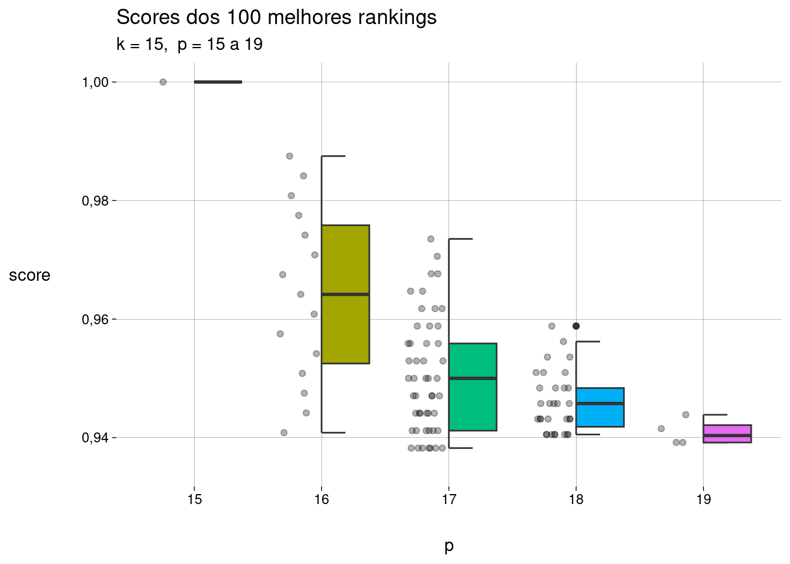

2 O ranking concorda com a lista? Posições
2.1 Usando \(p\) como medida de concordância
Imagine que a lista de \(k\) elementos foi definida por uma autoridade, usando critérios que não conhecemos.
Em uma tentativa de descobrir esses critérios, construímos um modelo para avaliar todos os elementos da população (que inclui os \(k\) elementos da lista e outros).
Nosso modelo produz um ranking de todos os elementos. Para facilitar, vamos supor que não há empates no ranking.
Uma pergunta natural sobre a qualidade do ranking produzido é
Quantas posições do ranking são necessárias para incluir todos os \(k\) elementos da lista?
A resposta é \(p\), a posição, no ranking, do elemento da lista com pior classificação.
Aliás, é por isso que convencionamos, no capítulo anterior, que nossos rankings sempre terminam com um elemento da lista.
Um exemplo:
A lista contém \(k = 5\) elementos.
O ranking \(r_1\) é
xx-x-xx, com \(p = 7\).O ranking \(r_2\) é
-xxxxx, com \(p = 6\).
Segundo a medida proposta aqui, \(r_2\) é melhor que \(r_1\).
Ou seja, quanto menor o valor de \(p\), melhor o ranking.
Embora comparar rankings através de seus valores de \(p\) seja simples, podemos examinar medidas alternativas, que sejam mais finas que esta.
Por exemplo, é discutível se os dois rankings xx---x e ---xxx devem ser considerados igualmente bons; no entanto, ambos têm \(p = 6\).
2.2 Usando \(p\) e as posições dos elementos da lista
Contando posições -
Dado um ranking \(r\) com \(k\) e \(p\), queremos definir uma função \(s(r)\) com as seguintes características:
-
Se \(r\) não contiver “
-”, então \(s(r) = 1\). Neste caso, \(r\) é um ranking perfeito, que coincide com a lista (por exempĺo,xxxxx). Em casos assim, \(k = p\). Vamos definir \(s\) como sendo da forma\[ s(r) = \frac k p + \cdots \]
onde as reticências representam termos que ainda vamos definir. Se \(r\) for um ranking perfeito, a parcela \(k/p\) será \(1\), e vamos definir os termos restantes para que sejam iguais a zero.
-
Os termos restantes devem ter valores maiores quanto melhor for o ranking. Quanto mais próximos do fim do ranking estiverem os caracteres “
-”, melhor ele será. Uma quantidade natural seria\[ \frac{\operatorname{soma\_}}{\sum_{i = 1, p}i} \quad=\quad \frac{\operatorname{soma\_}}{p(p + 1) / 2} \quad=\quad \frac{2\operatorname{soma\_}}{p(p + 1)} \]
onde \(\operatorname{soma\_}\) é a soma das posições ocupadas por “
_” em \(r\).Como queríamos, quando \(r\) for um ranking perfeito, \(\operatorname{soma\_} = 0\), e então \(s(r) = 1\).
-
Mas também queremos que somente rankings perfeitos tenham \(s(r) = 1\). Para isso, considere que um ranking mais próximo do perfeito é da forma
x...x-xOu seja, \(k = p - 1\) e \(\operatorname{soma\_} = p - 1\).
Vamos multiplicar a segunda parcela por \(\alpha\) de forma que \(s(r) < 1\) para este ranking quase perfeito:
\[ s(r) = \frac{p-1}{p} + \frac{2(p-1)}{p(p+1)} \cdot \alpha \]
Então
\[ \begin{aligned} s(r) < 1 &\iff \frac{2(p-1)}{p(p+1)} \cdot \alpha < \frac1p \\ &\iff 2 \alpha (p - 1) < p + 1 \\ &\iff \alpha < \frac12 \cdot \frac{p + 1}{p - 1} \\ &\iff \alpha = \frac1m \cdot \frac{p + 1}{p - 1} & (m > 2) \end{aligned} \]
o que dá
\[ \begin{aligned} s(r) &= \frac{k}{p} + \frac{2\operatorname{soma\_}}{p(p+1)} \cdot \alpha \\ &= \frac{k}{p} + \frac{2\operatorname{soma\_}}{p(p+1)} \cdot \frac1m \cdot \frac{p + 1}{p - 1} & (m > 2) \\ &= \frac{k}{p} + \frac{2\operatorname{soma\_}}{p(p-1)} \cdot \frac1m & (m > 2) \\ &= \frac{k}{p} + \frac{\operatorname{soma\_}}{p(p-1)} \cdot \frac2m & (m > 2) \end{aligned} \]
Dependendo do valor de \(m > 2\) escolhido, teremos medidas diferentes.
A função abaixo usa o default de \(m = 2{,}5\), mas valores diferentes podem ser passados.
Para \(p = 8\), alguns exemplos:
s(
c(
'xxxxxxxx',
'xxxxxx-x',
'-xxxxxxx'
)
) xxxxxxxx xxxxxx-x -xxxxxxx
1,0000000 0,9583333 0,8869048 Todos os rankings de comprimento \(8\), com suas pontuações:
df <- criar_df_rankings(8) %>%
mutate(
s = s(ranking)
) %>%
arrange(desc(s))
dfPerceba que pode haver empates: xxxx--xx e xxx-xx-x têm o mesmo valor de \(s\). É razoável achar que estes dois rankings têm a mesma qualidade.
Comparando rankings com valores diferentes de \(p\)
Como a lista é dada e fixa, só faz sentido, na prática, comparar rankings com o mesmo valor de \(k\).
Vamos examinar, para uma lista com \(k = 15\), os rankings possíveis com \(p\) variando de \(15\) a \(20\).
São \(15.504\) rankings. Eis os \(100\) melhores:
Ao compararmos dois rankings com mesmo valor de \(p\), nossa intuição coincide com os valores calculados por \(s()\): por exemplo, xxxxxxxxxxxxxx-x é melhor que xxxxxxxxxxxxx-xx (ambos com \(p = 16\)).
Mas existem vários casos em que um ranking com \(p\) maior é considerado melhor do que um ranking com \(p\) menor, o que vai contra a intuição apresentada antes.
O gráfico abaixo mostra os scores atribuídos para os \(100\) melhores rankings, separados por valores de \(p\):

Na lista abaixo, cada ranking da esquerda tem score melhor que o ranking à sua direita. Os números entre parênteses são os valores de \(p\):
xxxxxxxxxxxxxx--x (17) > xxxxxxxxx-xxxxxx (16)
xxxxxxxxxxxx-xx-x (17) > xxxxxxxx-xxxxxxx (16)
xxxxxxxxxxx-xxx-x (17) > xxxxxxx-xxxxxxxx (16)
xxxxxxxxxx-xxxx-x (17) > xxxxxx-xxxxxxxxx (16)
xxxxxxxxxxxxxx---x (18) > xxxxxxxxxxx-x-xxx (17)
xxxxxxxxx-xxxxx-x (17) > xxxxx-xxxxxxxxxx (16)
xxxxxxxxxxxxx-x--x (18) > xxxxxxxxxxx--xxxx (17)
xxxxxxxx-xxxxxx-x (17) > xxxx-xxxxxxxxxxx (16)
xxxxxxxxxxxx-xx--x (18) > xxxxxxxxxx-x-xxxx (17)
xxxxxxxxxxx-xxx--x (18) > xxx-xxxxxxxxxxxx (16)
xxxxxxxxxx-xxxx--x (18) > xx-xxxxxxxxxxxxx (16)
xxxxxxxxx-xxxxx--x (18) > x-xxxxxxxxxxxxxx (16)
xxxxxxxxxxxxxx----x (19) > xxxxxxxxxxxx---xxx (18)
xxxxxxxxxxxxx-x---x (19) > xxxxxxxx-x-xxxxxx (17)
xxx-xxxxxxxxxxx-x (17) > -xxxxxxxxxxxxxxx (16)
xxxxxxxxxxxx-xx---x (19) > xxxxxxxx--xxxxxxx (17)
xxxxxxxxxxx-xxx---x (19) > xxxxxxx-x-xxxxxxx (17)
xxxxxxxxxx-xxxx---x (19) > xxxxxxxxxx-x--xxxx (18)
xxxx-xxxxxxxxxx--x (18) > xxxxxxx--xxxxxxxx (17)
xxxxxxxxx-xxxxx---x (19) > xxxxxxxxxx--x-xxxx (18)
xxxxxxxx-xxxxxx---x (19) > xxxxxx-x-xxxxxxxx (17)
xxxxxxxxxxxxxx-----x (20) > xxxxxxxxxxxx---x-xx (19)
xxxxxxx-xxxxxxx---x (19) > xxxxxxxxxx---xxxxx (18)
xxxxxxxxxxxxx-x----x (20) > xxxxxx--xxxxxxxxx (17)
xxxxxx-xxxxxxxx---x (19) > xxxxxxxxx-x--xxxxx (18)
xxxxxxxxxxxx-xx----x (20) > xxxxx-x-xxxxxxxxx (17)
xxxxxxxxxxx-xxx----x (20) > xxxxxxxxx--x-xxxxx (18)
-xxxxxxxxxxxxxx--x (18) > xxxxx--xxxxxxxxxx (17)
xxxxxxxxxx-xxxx----x (20) > xxxxxxxxxxx--x--xxx (19)
xxxx-xxxxxxxxxx---x (19) > xxxxxxxxx---xxxxxx (18)
xxxxxxxxx-xxxxx----x (20) > xxxxxxxxxxx---x-xxx (19)
xxx-xxxxxxxxxxx---x (19) > xxxx-x-xxxxxxxxxx (17)
xxxxxxxx-xxxxxx----x (20) > xxxxxxxxxxx----xxxx (19)
xx-xxxxxxxxxxxx---x (19) > xxxx--xxxxxxxxxxx (17)
xxxxxxx-xxxxxxx----x (20) > xxxxxxxxxx-x---xxxx (19)
xxxxxx-xxxxxxxx----x (20) > xxxxxxxx---xxxxxxx (18)
-xxxxxxxxxx-xxxx-x (18) > xxx-x-xxxxxxxxxxx (17)
xxxxx-xxxxxxxxx----x (20) > xxxxxxx-x--xxxxxxx (18)
-xxxxxxxxx-xxxxx-x (18) > xxx--xxxxxxxxxxxx (17)
xxxx-xxxxxxxxxx----x (20) > xxxxxxx--x-xxxxxxx (18)
-xxxxxxxxxxxx-xx--x (19) > xx-x-xxxxxxxxxxxx (17)
xxx-xxxxxxxxxxx----x (20) > xxxxxxxxx-x---xxxxx (19)
-xxxxxxxxxxx-xxx--x (19) > xxxxxxx---xxxxxxxx (18)
xx-xxxxxxxxxxxx----x (20) > xx--xxxxxxxxxxxxx (17)
x-xxxxxxxxxxxxx----x (20) > xxxxxx-x--xxxxxxxx (18)
-xxxxxx-xxxxxxxx-x (18) > x-x-xxxxxxxxxxxxx (17)
-xxxxxxxxxxxxxx----x (20) > xxxxxxxxx---x-xxxxx (19)
-xxxxxxxxx-xxxxx--x (19) > xxxxxx--x-xxxxxxxx (18)
-xxxxxxxxxxxxx-x---x (20) > xxxxxxxxx----xxxxxx (19)
-xxxxxxxx-xxxxxx--x (19) > x--xxxxxxxxxxxxxx (17)
-xxxxxxxxxxxx-xx---x (20) > xxxxxxxx-x---xxxxxx (19)
-xxxxxxx-xxxxxxx--x (19) > -x-xxxxxxxxxxxxxx (17)
-xxxxxxxxxxx-xxx---x (20) > xxxxxxxx--x--xxxxxx (19)
-xxxxxx-xxxxxxxx--x (19) > --xxxxxxxxxxxxxxx (17)
-xxxxxxxxxx-xxxx---x (20) > xxxxx--x-xxxxxxxxx (18)
-xxxxxxxxx-xxxxx---x (20) > xxxxx---xxxxxxxxxx (18)
-xxxxxxxx-xxxxxx---x (20) > xxxx-x--xxxxxxxxxx (18)
-xxxxxxx-xxxxxxx---x (20) > xxxxxxx--x--xxxxxxx (19)
-xx-xxxxxxxxxxxx--x (19) > xxxx--x-xxxxxxxxxx (18)
-xxxxxx-xxxxxxxx---x (20) > xxxxxxx---x-xxxxxxx (19)
-xxxxx-xxxxxxxxx---x (20) > xxxx---xxxxxxxxxxx (18)
-xxxx-xxxxxxxxxx---x (20) > xxxxxxx----xxxxxxxx (19)
--xxxxxxxxxxxxxx--x (19) > xxx-x--xxxxxxxxxxx (18)
-xxx-xxxxxxxxxxx---x (20) > xxxxxx-x---xxxxxxxx (19)
--xxxxxxxxxxxxx-x-x (19) > xxx--x-xxxxxxxxxxx (18)
-xx-xxxxxxxxxxxx---x (20) > xxxxxx--x--xxxxxxxx (19)
--xxxxxxxxxxxx-xx-x (19) > xxx---xxxxxxxxxxxx (18)
-x-xxxxxxxxxxxxx---x (20) > xxxxxx---x-xxxxxxxx (19)
--xxxxxxxxxxxxxx---x (20) > xx-x--xxxxxxxxxxxx (18)
--xxxxxxxxxxxxx-x--x (20) > xx--x-xxxxxxxxxxxx (18)
--xxxxxxxxxxxx-xx--x (20) > xx---xxxxxxxxxxxxx (18)
--xxxxxxxxxxx-xxx--x (20) > x-x--xxxxxxxxxxxxx (18)
--xxxxxxxxxx-xxxx--x (20) > xxxxx----xxxxxxxxxx (19)
--xxxxxx-xxxxxxxx-x (19) > x--x-xxxxxxxxxxxxx (18)
--xxxxxxxx-xxxxxx--x (20) > xxxx-x---xxxxxxxxxx (19)
--xxxxx-xxxxxxxxx-x (19) > x---xxxxxxxxxxxxxx (18)
--xxxxxxx-xxxxxxx--x (20) > xxxx--x--xxxxxxxxxx (19)
--xxxx-xxxxxxxxxx-x (19) > -x--xxxxxxxxxxxxxx (18)
--xxxxxx-xxxxxxxx--x (20) > xxxx---x-xxxxxxxxxx (19)
--xxx-xxxxxxxxxxx-x (19) > --x-xxxxxxxxxxxxxx (18)
--xxxxx-xxxxxxxxx--x (20) > xxxx----xxxxxxxxxxx (19)
--xx-xxxxxxxxxxxx-x (19) > ---xxxxxxxxxxxxxxx (18)
--xxxx-xxxxxxxxxx--x (20) > xxx-x---xxxxxxxxxxx (19)
--xxx-xxxxxxxxxxx--x (20) > xxx--x--xxxxxxxxxxx (19)
--xx-xxxxxxxxxxxx--x (20) > xxx---x-xxxxxxxxxxx (19)
--x-xxxxxxxxxxxxx--x (20) > xxx----xxxxxxxxxxxx (19)
---xxxxxxxxxxxxxx--x (20) > xx-x---xxxxxxxxxxxx (19)
---xxxxxxxxxxxx-xx-x (20) > xx--x--xxxxxxxxxxxx (19)
---xxxxxxxxxxx-xxx-x (20) > xx---x-xxxxxxxxxxxx (19)
---xxxxxxxxxx-xxxx-x (20) > xx----xxxxxxxxxxxxx (19)
---xxxxxxxxx-xxxxx-x (20) > x-x---xxxxxxxxxxxxx (19)
---xxxxxxxx-xxxxxx-x (20) > x--x--xxxxxxxxxxxxx (19)
---xxxxxxx-xxxxxxx-x (20) > x---x-xxxxxxxxxxxxx (19)
---xxxxxx-xxxxxxxx-x (20) > x----xxxxxxxxxxxxxx (19)
---xxxxx-xxxxxxxxx-x (20) > -x---xxxxxxxxxxxxxx (19)
---xxxx-xxxxxxxxxx-x (20) > --x--xxxxxxxxxxxxxx (19)
---xx-xxxxxxxxxxxx-x (20) > ---x-xxxxxxxxxxxxxx (19)
---x-xxxxxxxxxxxxx-x (20) > ----xxxxxxxxxxxxxxx (19)Parece que alguns destes pares são discutíveis.
Talvez devamos mudar a função \(s()\) para produzir valores menores quando \(p\) for maior.